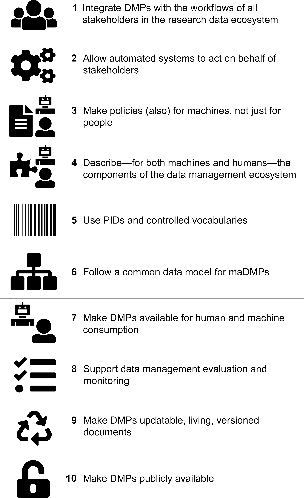

Data Management Plans (DMP)¶
learning-objectives
Describe the purpose of a data management plan
Describe the important elements of a data management plan
Use a self-assessment to design a data management plan
“A data management plan or DMP is a formal document that outlines how data are to be handled both during a research project, and after the project is completed.[1] The goal of a data management plan is to consider the many aspects of data management, metadata generation, data preservation, and analysis before the project begins; this may lead to data being well-managed in the present, and prepared for preservation in the future.”
(Source: https://en.wikipedia.org/wiki/Data_management_plan)
Why bother with a DMP?
How would you answer?
Do you have a data management plan? If so, how do you use it?
“Those who fail to plan, plan to fail”
Returning to the assertion that data (and its value) is at the foundation of your science, working without a data management plan should be considered scientific misconduct.
Those are strong words. And while we might have an intuition of the boundaries of research ethics - data mismanagement seems more like an annoyance than misconduct. However, if your mismanagement leads to error in your research data, or the inability to make publicly-funded research open to the public, these are serious consequences. Increasingly, funders realize this.
Stick:
Reviewers definitely look at them, but they may not be enforced.
Carrot:
Make your life easier
Planning for you project makes it run more smoothly
Avoid surprise costs
Elements of a good DMP¶
Information about data & data format(s)
data types
data sources
analysis methods
formats
QA/QC
version control
data life cycle
Metadata content and format(s)
format
standards
Policies for access, sharing, and re-use
funder obligations
ethical and privacy issues (data justice)
intellectual property, copyright, citation
timeline for releases
Long-term storage, data management, and preservation
which data to preserve
which archive/repository
Budget (PAPPG)
each of the above elements cost time/money
Personnel time for data preparation, management, documentation, and preservation (including time)
Hardware and/or software for data management, back up, security, documentation, and preservation (including time)
Publication/archiving costs (including time)
Not only what, but who (roles).
Extra challenges for collaborative projects.
Machine actionable DMPs¶
DMPs describe research methods that will evolve over the course of a project
to be a useful tool for researchers and others, the content must be updated to capture the methods that are employed and the data that are produced

Tools for DMPs¶
Exercise
Thinking about a dataset you work with, complete the Data Stewardship Wizzard.
References and Resources¶
Professional and scholarly societies, e.g., theEcological Society of America http://www.esa.org/esa/science/data-sharing/resources-and-tools/
DataOne - https://www.dataone.org/best-practices
Data Carpentry - http://datacarpentry.org/
The US Geological Survey http://www.usgs.gov/datamanagement/index.php
Repository registry (and search) service: http://www.re3data.org/
Your university library
Fix or improve this documentation:
On Github: Github Repo Link
Send feedback: Tutorials@CyVerse.org